What Makes ShadowClan Special
ShadowClan operates in the pine forests and marshlands, hunting through wet undergrowth with a ruthlessness that puts most ThunderClan warriors on edge. Their territory breeds a specific kind of cat — patient, opportunistic, and unwilling to yield ground even when outnumbered.
Their real distinction lies in endurance. When Twolegs leveled the old forest, ShadowClan held firm. When Brokenstar's tyranny nearly tore the clan apart from within, they rebuilt. Survival, not glory, drives their choices, and that single fact explains more about ShadowClan than any amount of clan mythology.
Meet the Legendary ShadowClan Warrior Cats
ShadowClan has produced some of the most cited cats in the Warrior Cats canon, from founders who built a clan from nothing to medicine cats burdened by secrets. Each profile below links to a full breakdown of that warrior's arc.
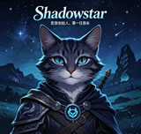


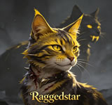
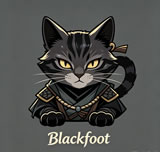


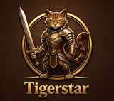
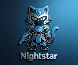

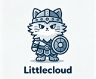
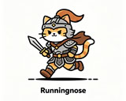
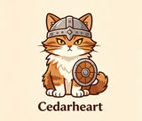
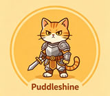
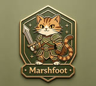
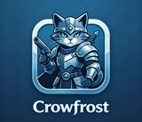

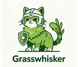

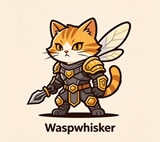
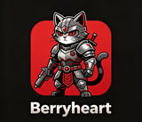
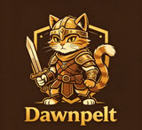
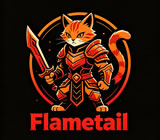
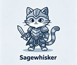
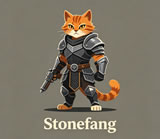
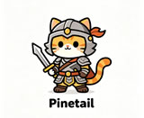
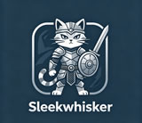

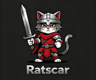
ShadowClan Warrior Cats - Character Deep Dives
🌑 Shadowstar - The Founder Who Started It All
Shadowstar, born Tall Shadow, founded ShadowClan in the marshlands at a time when survival required hard choices and harder claws. She selected the pine forest and wet ground for practical reasons: dense cover, defensible ground, and a prey base other clans had dismissed. From that foundation she built a clan's identity — self-reliance, suspicion of outsiders, and unflinching loyalty among members. Every ShadowClan leader since has worked within the framework she established.
💀 Brokenstar - The Leader Who Broke His Clan
Brokenstar's name describes more than a crooked tail. He trained kits before they were ready, drove WindClan from their territory, and was eventually exposed as his own father's murderer. His reign was short, brutal, and left damage on ShadowClan that took generations to repair. His arc remains a core part of the series because it documents the cost of ruling through fear alone.
🔥 Tigerstar II - From Exile to Redemption
Tigerheart's path from ShadowClan deputy to loner to Tigerstar II is unusual among clan leaders. After leaving ShadowClan to follow Dovewing, he returned with a perspective no other ShadowClan cat possessed — direct knowledge of the world outside clan borders and the consequences of poor judgment. As Tigerstar II, he has applied a practical, less rigid approach to leadership. His record is still being written.
🐱 Tawnypelt - ThunderClan Blood, ShadowClan Heart
Tawnypelt was born in ThunderClan to Goldenflower and Tigerstar, and she chose to leave that clan because the suspicion tied to her father's name made her position untenable. In ShadowClan, her reputation rested on her own skills rather than family history. She became a reliable warrior, a mother, and a senior warrior whose judgment carried weight. Her arc is a study in choosing allegiance by merit rather than inheritance.
⚫ Blackstar - The Survivor
Blackstar led ShadowClan through the Dark Forest battle, the Great Journey, and a long stretch of border disputes without losing territory or clan cohesion. He was not a charismatic leader, and he was not widely loved, but he was stubborn, practical, and consistent in putting the clan's survival above personal pride. For a clan as battered as ShadowClan, steady leadership mattered more than heroic gestures.
🌿 Yellowfang - The Medicine Cat With Too Many Secrets
Yellowfang served as a ShadowClan medicine cat while hiding her pregnancy with Brokenstar, a secret that defined much of her later life. After being driven from ShadowClan, she settled in ThunderClan, became Fireheart's trusted ally, and eventually rose to ThunderClan's medicine cat position. Her arc tracks a cat rebuilding purpose after public disgrace.
🍂 Raggedstar - The Leader Who Trusted Too Much
Raggedstar was a competent leader who misjudged his own son. His relationship with Yellowfang crossed boundaries that should not have been crossed, and his belief that Brokenstar would mature into a worthy leader cost him his life. ShadowClan's later suspicion of charismatic heirs traces back to Raggedstar's death.
🔥 Firestar - From Kittypet to ThunderClan Legend
Firestar began as Rusty, a house cat with a collar and no hunting experience. Bluestar recognized a stubbornness and adaptability in him that other cats had dismissed. He progressed through Firepaw and Fireheart to become ThunderClan's leader and the cat who united the clans against threats none of them could face alone. His path from kittypet to leader is the most cited underdog arc in the series, and even ShadowClan acknowledges that he earned his standing through action rather than lineage.
What ShadowClan Warrior Cats Stand For
Each clan in the series carries a distinct identity. RiverClan swims and stays proud. WindClan values speed and open ground. ThunderClan fills the role of forest heroes. ShadowClan Warrior Cats occupy a different slot — the group that handles problems other clans leave unresolved.
The ShadowClan Way
ShadowClan reads the warrior code in context. They protect their own, defend their borders, and refuse to abandon clanmates in need. When neighboring clans hesitate, ShadowClan acts. That pragmatism has rescued them from situations their rivals would have written off.
How Territory Shapes the Clan
ShadowClan cats learn patience in pine cover and marsh reeds. They stalk, wait, and strike from positions their opponents never see. On home ground, a ShadowClan warrior is hard to spot until the fight has already started.
The Story of ShadowClan Warrior Cats
ShadowClan Warrior Cats' documented history begins with Tall Shadow's founding in the marshlands. She selected pine forest and wet ground for defensibility and for a prey base other clans had dismissed, and from that decision came a clan identity built on self-reliance and tactical thinking.
The Early Days
Early ShadowClan faced constant territorial pressure from neighbors who wanted the marsh. They held the ground through a willingness to fight on terms other clans refused. The pattern set in those first seasons — defend, adapt, outlast — remains visible in modern ShadowClan tactics.
The Brokenstar Era
Brokenstar's leadership is short in pages but long in consequence. Training kits too young, waging war on WindClan, and killing his own father to seize power — his reign demonstrated exactly how fast a clan can slide when judgment is replaced by ambition. The recovery took years, and clan elders still cite it as a warning.
Modern ShadowClan
Under Blackstar, Rowanstar, and now Tigerstar II, ShadowClan has rebuilt into a clan that other groups respect, even when they don't trust it. Recent leaders have learned, often through cost, that full isolation weakens the clan more than it protects it.
ShadowClan Territory
ShadowClan holds pine forest and marshland, a landscape that other clan cats find bleak at best and actively hostile at worst. The evergreen canopy blocks light, the ground stays wet, and the prey base consists mostly of frogs, lizards, and the occasional water vole — fare that forest cats would turn their noses up at.
The Camp
ShadowClan's camp sits under brambles and pine roots, concealed well enough that unfamiliar cats can pass within a tail-length and never notice it. Dens are reinforced with mud and woven branches, holding warmth through leaf-bare. The camp is built for function.
Border Disputes
ShadowClan shares borders with ThunderClan and RiverClan, and the boundaries have been contested since the clans first formed. ThunderClan, in particular, has a record of pushing into ShadowClan territory under the pretext of policing the forest. ShadowClan patrols those borders with extra attention, since the neighbors rarely need a strong reason to expand their own hunting grounds.
ShadowClan Leaders Through the Ages
ShadowClan Warrior Cats' leadership history is more turbulent than most other clans'. While ThunderClan passed through a relatively stable succession from Bluestar to Firestar to Bramblestar, ShadowClan saw leaders driven out, killed by their own kin, and forced into temporary merger just to keep the clan alive. The cats who held this position needed physical durability and the discipline to keep going after public setbacks.
Shadowstar
Founder and first leader. Built ShadowClan from nothing in the marshlands.
Raggedstar
Former leader and Yellowfang's mate. Killed by his son Brokenstar.
Brokenstar
Tyrant who broke the warrior code. Exiled after his crimes were exposed.
Blackstar
Led ShadowClan through the Dark Forest battle and Great Journey.
Rowanstar
Former leader who struggled to hold ShadowClan together during hard times.
Tigerstar II
Current leader. Formerly Tigerheart, returned from exile to lead.
Explore More Warrior Cats
ShadowClan is one thread in a larger tapestry. For readers interested in contrast, our guide to ThunderClan Warrior Cats covers Bluestar's leadership, Firestar's rise, and the forest politics that shaped both clans. For hands-on naming, the Clan Name generator produces full clans with traits, skills, and threats, while the Warrior Cats Name Generator pulls from all five clans and reflects the darker naming conventions ShadowClan cats favor.